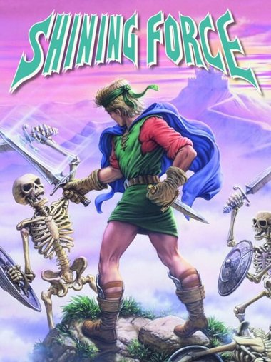

Turn Queue & Tactics v15
A visible turn order bar, three difficulty levels chosen at New Game, experience overflow that no longer vanishes, and per-character kill and death counters. Applies to the US ROM as a ~3 KB IPS patch.
Read more ▸
Home › Shining Force
Sega Mega Drive · 1992

Shining Force came out on the Mega Drive in 1992, developed by Climax Entertainment together with Sonic! Software Planning — the studio that later became Camelot — and published by Sega. It was the second entry in the Shining series, and the one that turned it into a strategy game.
It runs on two halves that take turns. Between battles you walk around towns in the third person, talk to everyone twice, buy equipment, and pick up whoever is willing to follow you — then the game drops the whole party onto a grid and becomes something much colder. Every combatant, yours and theirs, acts one at a time in an order the game works out from their agility, across terrain that decides how far you can move and how hard you are to hit.
Thirty characters can join over the course of the campaign and twelve of them march into any given battle, which makes choosing the squad a small strategy game of its own. They level up, they promote at level ten into a stronger class, and when one of them falls they are not gone forever — a priest at the church brings them back for a fee, which is the game's way of punishing you without ruining your afternoon.
The plot is the one everybody can recite: the kingdom of Guardiana, the armies of Runefaust marching out of the west, and an ancient dragon that was sealed away long ago and is about to stop being sealed away. What has kept the game alive for thirty years is underneath the plot — battles you can lose for reasons you can name, and win the same way.
A visible turn order bar, three difficulty levels chosen at New Game, experience overflow that no longer vanishes, and per-character kill and death counters. Applies to the US ROM as a ~3 KB IPS patch.
Read more ▸
In the drawer
Ideas currently taking up space: a proper battle log, promotion previews, and a rework of how the AI values terrain. No promises about the order.
Nothing here yet.